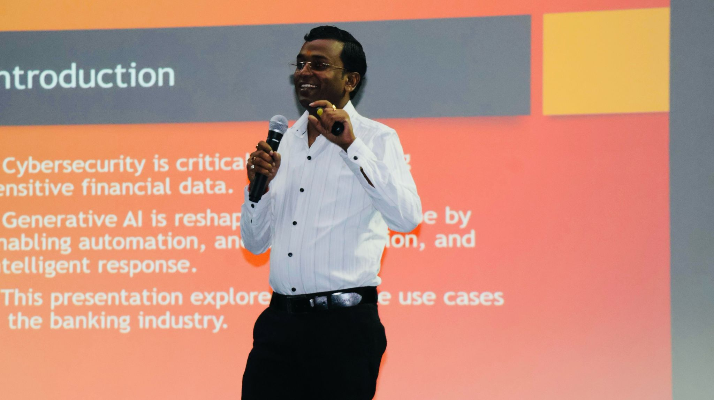
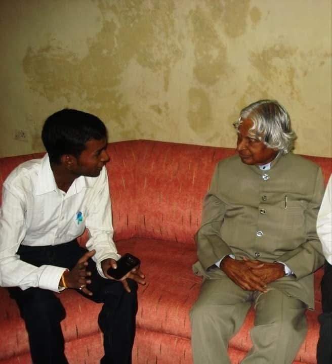

Enterprise AI Strategy
Architecting AI-first roadmaps for organizations — from ideation to implementation, ensuring AI investments deliver real business value and competitive advantage.
01Enterprise AI, Digital Transformation & Innovation Leader
I drive AI initiatives by researching emerging trends in Generative AI, Agentic AI & intelligent automation — exploring creative ideas to implement AI across Financial Services, translating them into scalable solutions that create measurable impact for global enterprises.


I'm Ajay Garg, an Enterprise AI, Digital Transformation, and Innovation Leader with 14+ years of experience driving business transformation through Artificial Intelligence, Generative AI, Agentic AI, Agile Delivery, and Enterprise Consulting.
A trusted advisor to business and technology leaders, with a proven track record of leading cross-functional teams, delivering large-scale transformation programs, and fostering a culture of innovation, collaboration, and continuous improvement across global enterprises. Experienced in bridging strategy with execution across Financial Services, Technology, Startups, Academia, and Research.
Multiple Patent Holder, Published Author, Innovation Champion, and lifelong learner committed to advancing responsible AI, intelligent automation, and future-ready enterprises. I believe innovation is not just about adopting technology — it's about empowering people, solving meaningful problems, and creating sustainable value.
From AI strategy & governance to hands-on Generative AI and Agentic AI — building intelligent solutions for financial services and global enterprises.
Architecting AI-first roadmaps for organizations — from ideation to implementation, ensuring AI investments deliver real business value and competitive advantage.
01Leveraging large language models, prompt engineering, and generative AI to build creative, intelligent solutions — from content generation to complex reasoning systems.
02Designing autonomous AI agents that reason, plan, and act — building multi-agent workflows that solve complex enterprise problems with minimal human intervention.
03Applying AI and intelligent automation to transform banking, capital markets, and financial operations — driving efficiency, compliance, and smarter decision-making.
04Establishing frameworks for ethical AI deployment — ensuring fairness, transparency, accountability, and regulatory compliance across AI systems at scale.
05End-to-end digital transformation — modernizing legacy systems, implementing intelligent automation, and building future-ready enterprises that scale with technology.
06Real products where AI innovation meets hands-on craft.
Developed a national platform on innovation with a focus on an Indian model of inclusive growth. Creating a crosscutting system to provide mutually reinforcing policies, recommendations, and methodologies to implement and boost innovation performance in the country.
Associated with Padmashree Dr D. Y. Patil VidyapeethA software tool designed to resolve key mapping issues for Devanagari (Hindi/Marathi) scripts. Compatible with virtually every Hindi/Marathi font being used, with features for conversion to English fonts to simplify multilingual typography.
Open projectA digital university setup bringing global universities under one roof. Allows students to access details of each university and make cognizant decisions about higher education while reducing the astronomical fees associated with physical education.
Read publication14+ years across Financial Services, technology, startups, academia & research — with a parallel track of learning that started it all.
Transforming Education with Data Science in the AI Era — a globally-contributed volume on how AI and data science are revolutionizing learning, from personalized instruction and adaptive assessment to generative-AI lesson planning, responsible data practices, and blockchain-based credentials.
Leading strategic consulting and enterprise transformation for global Financial Services clients across Risk Management, Regulatory Compliance, Reconciliation Control Services, Control Testing, and governance.
Driving AI-led transformation by identifying high-impact use cases for Generative AI, Agentic AI, and Intelligent Automation — enabling scalable, secure, business-driven AI adoption across the FSRM practice. Drove enterprise AI platforms including AML Analytics, Continuous Controls Monitoring (CCM), Control Intelligence, and AI-powered governance. Established program governance, Agile delivery, executive stakeholder management, and Responsible AI practices while leading cross-functional global teams.
Led complex programs for a leading global financial institution — Agile methodologies, business analysis, portfolio planning, and cross-functional delivery across enterprise initiatives.
Delivered consulting engagements across Risk Management, Regulatory Compliance, Control Testing, Reconciliation Controls, and GRC. Served as a functional consultant — translating complex business and regulatory requirements into scalable solutions through business analysis, solution design, UAT, and Agile delivery, contributing to AI-enabled transformation initiatives.
Led the India market for a music-education Ed-Tech startup — managing Sales, Success, and Operations for overall growth, and translating user requirements and feedback into development tasks (JIRA stories) for the tech platform.
Worked on the National Center of Excellence in Technologies for Internal Security (NCETIS) — developing AI-based solutions in consultation with industry and implementing them across government departments.
Technology partner for startups — driving quality products delivered fast at fair cost. Owned business analysis, Agile delivery, and retrospectives to help early-stage teams start small and grow.
Built and scaled a consumer technology venture — leading business analysis, startup operations, product, and growth across a multi-year journey.
Engaged the nation's youth in innovation and entrepreneurship — scouting the best ideas to convert into enterprises and implementing one of India's first online mentorship programs (NESTurnRight.com), plus mobility and skilling programs for budding engineers.
Led business strategy and technology, alongside coordinating Techpedia.in — building bridges between grassroots innovation and technology.
Researched multi-language computing — developed a prototype for Indic languages and shipped it into a product, and worked on a video-conferencing tool.
A crucible of innovators, farmers, scholars, and changemakers. Contributing to grassroots innovation, ethical knowledge-sharing, and protecting the IPR of traditional knowledge holders across a global network.
The technical foundation — rigorous engineering thinking, problem-solving, and a strong base in software development that underpins everything from AI innovation to enterprise consulting.
Where the journey began — building the foundational discipline, curiosity, and learning habits that continue to drive lifelong growth.
A lifelong learner — extending the academic foundation with industry credentials across Applied AI, the future of work, and Agile leadership. See certifications →
Continuous learning across AI, agile, and innovation — validated by industry leaders.
A Multiple Patent Holder and Published Author committed to pushing the boundaries of AI innovation. My research explores how enterprises can harness Generative AI, Agentic AI, and intelligent automation to solve real-world problems — from AI-driven financial services optimization to building future-ready enterprises. Affiliated with IGI Global Scientific Publishing.
View author profileUnveils how AI and data science are revolutionizing learning for everyone — bringing together cutting-edge strategies in personalized instruction, adaptive assessment, emotion-aware teaching, and generative-AI lesson planning, alongside responsible data practices and blockchain-based credentials.
View author profileDigital University concept comes as a boom to all aspirants, allowing details of all universities to be accessed easily. It brings ease on students' pockets and brings education to rural India through mobile handsets, bridging the divide using wireless technology.
Read publicationAddressing key mapping issues for Devanagari fonts. FONT PROCESSOR offers great significance for Devanagari language, making it compatible with virtually every Hindi/Marathi font and convertible to English fonts.
Read publicationAn AI-powered solution that monitors, analyzes, and adjusts tire pressure automatically using camera-based vehicle detection — integrating computer vision, AI processing, and real-time pressure monitoring to optimize inflation.
View patentA granted design patent introducing a novel vertex turbine geometry engineered for improved energy-capture efficiency.
View patentTechnologies towards a 5G network for intelligent health-care using IoT notification combined with machine-learning programming for real-time patient monitoring.
View patentA method to avoid prank and nuisance calls in mobile communication through intelligent use of prefixes and standardized number formats.
View patentAn integrated system that analyzes the sentiment of political news in real time and reframes negative narratives positively — preserving factual integrity using NewsAPI, VADER/TextBlob, GPT-3.5, and Streamlit.
View patentHave an AI initiative that needs strategic leadership, a digital transformation program that needs momentum, or an innovation idea worth exploring? I'd love to hear about it.